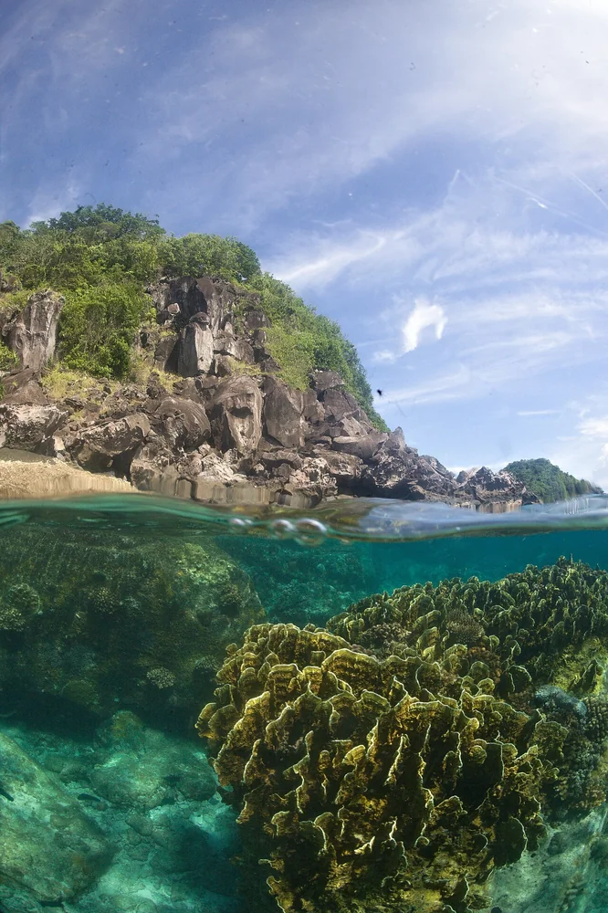

Apo Island
Negros Oriental, Philippines · plongée, snorkeling

Une île au large de Negros Oriental, reconnue pour son sanctuaire marin. Une destination pour découvrir les récifs philippins.
- Lieu
- Negros Oriental, Philippines
- Niveau
- Variable selon les conditions
- Activités
- plongée, snorkeling
- Type d'eau
- Mer / océan
- Coordonnées
- 9.08, 123.27 (position approximative du secteur)
Ouvrir dans Ocean Buddy Télécharger sur l'App Store
Source : Department of Foreign Affairs — Philippines.